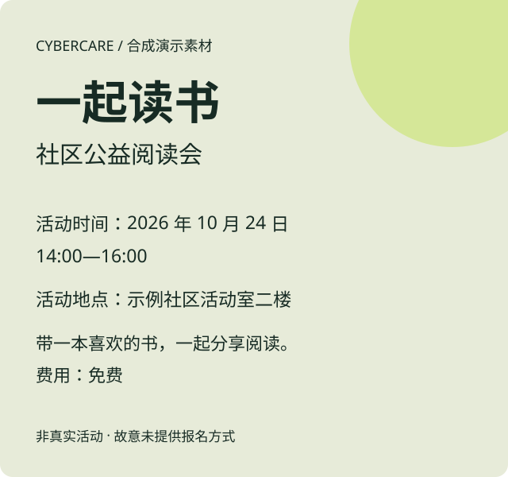

AFTER / 重点可以直接读
海报没写的信息会标为未知。处理自己的海报时，需要先检测、逐项确认，再导出结果。
公益小事 / 先别划走
不求打赏，只求一点注意力。
把海报整理成文字，方便复制，也能放大阅读。
时间、地点、怎么报名，我们一起对照原图核对。
先看整理前后 只看示例，无需上传
ATTENTION INTO ACTION
先把这张海报上的信息核对清楚。

角色图片没加载出来。
没关系，我先用文字把话说完。
来都来了，先借我 30 秒。真的，不收钱。
角色会按预设台词互动，不是实时 AI 对话；这里不会自动播放声音。
这是本地演示的 2D 角色，没有 3D 骨骼动画，也不会随语音同步口型。对外使用素材前，还需核实授权。
选一种情况，从眼前的材料开始。
为什么要把海报整理成文字？
海报上的字，读屏软件不一定能读出来。另附一份文字，依赖读屏的人就能多一种办法了解活动。
科普示例 1 / 3 · 固定三条，非每日更新 · 资料：W3C 图片教程
A SMALL PREVIEW
合成示例 · 只读预览。尚未检测、尚未人工确认，不能作为正式回执。
正在加载合成示例…
BEFORE / 字在图片里

原图暂不可用，可以对照下方的完整转录。
AFTER / 重点可以直接读
海报没写的信息会标为未知。处理自己的海报时，需要先检测、逐项确认，再导出结果。
WORKBENCH / 海报工作台
先对照原图，核对时间、地点和报名方式。
不清楚的可以留空，检测并确认后就能下载。
正在读取本地配置…
INPUT / 原始材料
这是本机演示。你提交的原图不写入磁盘，任务和文字最多在内存中保留 30 分钟，重启后会丢失。刷新页面后无法恢复当前任务，但未到期的资料仍在本机服务内存中。删除任务不能撤回已经发给第三方的请求。公开示例是演示附带的已有存档。
REVIEW / 对照、修订与确认
提交材料后，就能对照草稿核对。
没写清楚的信息可以留空，不用猜。
检测通过，仍要核对信息是否准确。
完成核对，也不代表已通过用户测试或被机构采用。
暂时没读到任务状态，处理可能还在继续。点击下方按钮只会查询进度，不会重新上传图片或调用模型，也不会延长资料的保留时间。
点击后会删除这次失败或已取消的任务，把本页图片和来源留下来，方便你对照着输入文字。不会再调用模型，也不会延长材料的保留时间；之前发出的请求可能仍会计费。
先看看原图或转录文字，不清楚的就保留未知。如果选错了图片，或图片里没有活动信息，可以删除任务后重新提交。补充信息时，请写明核实过的来源。
检查的是准备导出的大字 HTML 页面，不能判断海报信息是否属实。
还没检测，请先检测再确认和导出。
“这次咱俩都站着。”
这份记录说明你完成了本次核对，还不能证明接收者用起来是否方便，也没有机构采用的证据。
VOICE / 留下完整的话
把短音频变成文字，再对照原音核对重点。
转写一次，摘要最多再请求一次，无自动重试。与海报和截图共用最多 10 次的进程请求额度；不是费用金额上限。供应商留存策略尚未核实。
正在检查配置…
ONE STEP / 每次看清一步
说清你想做什么，先看当前截图里的下一步。
每轮一张图、一次请求。请按实际界面判断；看不清或涉及敏感操作时暂停。不会控制你的设备、打开截图内链接或代替你提交。
正在检查配置…
请上传操作后的新截图，目标保持不变，再提交当前一步。
材料与任务只在本机内存暂留，最多 30 分钟；刷新不恢复。删除与取消不能撤回供应商已收到的资料或已发生的计费。截图里的按钮识别与指导安全仍需要真人核对。
MY DESK / 从一件小事开始
继续核对海报，也可以在这里调整阅读设置。
选一张海报开始，也可以先用内置样例试试。
切换页面时，进度会保留；刷新后无法恢复任务。资料最多保留 30 分钟，需要的结果请及时下载。
这些设置保存在本机浏览器，退出演示身份后也会保留。
不用登录就能使用全部功能。演示身份只是换个称呼，不会建立账户或同步资料。称呼只在当前标签页记住，关闭后不再保留；换身份也不会改变本页任务。
提交材料后，先对照原图核对四项信息和完整文字，再检测、逐项确认。完成后可以下载文字、大字 HTML 或核对记录。不清楚的信息可以保留未知；修改后要重新检测和确认。
原图和任务只在本机服务内存中保留，最多 30 分钟，重启后会丢失。演示登录不会替你保存海报、任务历史或导出文件。如果选择真实识别，图片会发给 StepFun。想提前清除本机任务，可以到海报工作台删除。